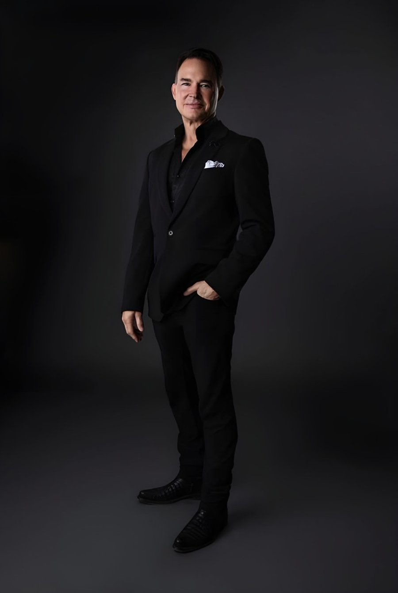

Meet Dr. Cuzalina — the film
Dr. Angelo Cuzalina, MD, DDS
Founder · Fellowship Director · 18,000+ procedures (published profile)
Consults & surgery in Oklahoma City or Tulsa — virtual or in person
AACS President 2011–2012ABCS President 2013Fellowship DirectorTextbook Editor
EducationOklahoma State University (BS Physiology 1987) → Baylor College of Dentistry (DDS 1991, ranked 2nd of 82) → University of Alabama School of Medicine (MD 1995)
PathOral & maxillofacial surgery residency (UAB, Chief Resident 1996–97) → general cosmetic surgery fellowship, Abilene TX, under Howard A. Tobin, MD (AACS President 1993–95)
BoardsAmerican Board of Cosmetic Surgery (2000; recert. 2010, 2020) · American Board of Facial Cosmetic Surgery (2015) · American Board of Oral & Maxillofacial Surgery (2000; recert. 2010)
LeadershipPresident, American Academy of Cosmetic Surgery (2011–2012) · President, American Board of Cosmetic Surgery (2013) · President, Cosmetic Surgery Foundation (2016–2018, per CV) · Section Editor, The American Journal of Cosmetic Surgery
TeachingDirects one of only 16 ABCS-listed general cosmetic surgery fellowships in the U.S. (co-director James Koehler, MD, DDS) · Co-Chair, Body Procedures Cadaver Workshop, AACS 2026
RecognitionSRC Master Surgeon in Specialized Cosmetic Surgery — Face & Neck AND Trunk, Breast & Extremities (2021) · “Physician Surgical Innovator of the Year,” THE Aesthetic Show 2018
FacilityAAAHC-accredited surgical villa with overnight guest suites
FocusRhinoplasty · deep plane facelift · complex revision surgery · total-body contouring
In the gallery170 publishable cases in our consented case archive — most often Mastopexy-Augmentation and Tummy Tuck
Complete repository — every article, chapter, presidency and film — lives in The Cuzalina Library →
Sources: tulsasurgicalarts.com/curriculum-vitae · cosmeticsurgery.org/past-presidents (“2011-2012 / Angelo Cuzalina, MD, DDS, FAACS”) · americanboardcosmeticsurgery.org profile · IntechOpen profile 270232 (“performed over 18,000 procedures”) · surgicalreview.org. All fetched 2026-08-18.